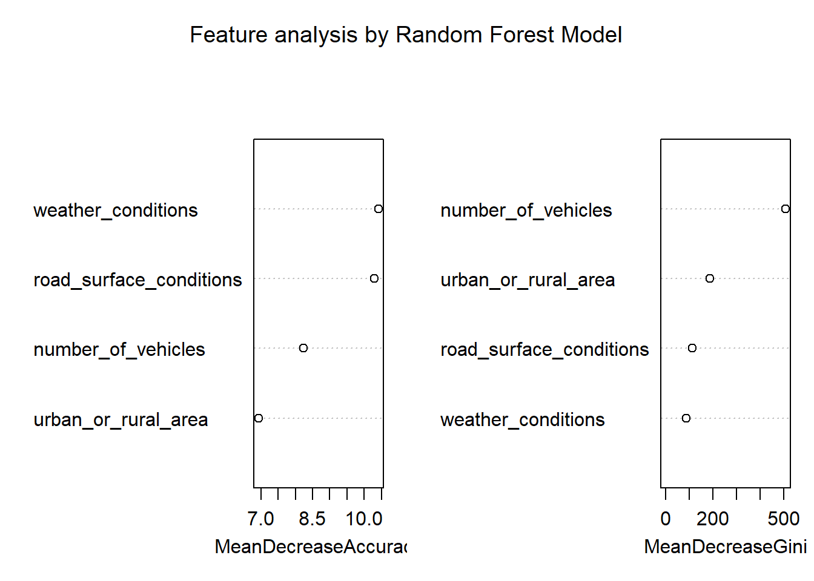
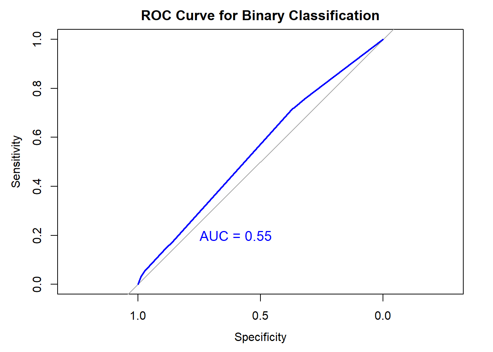
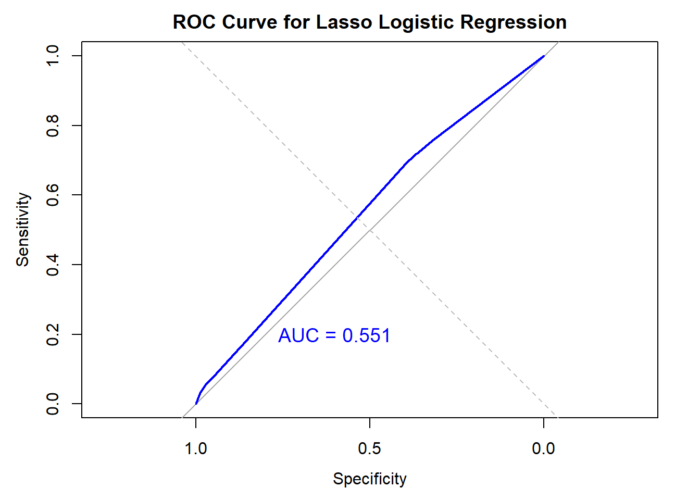

CRASH CLARITY

ABSTRACT
Road accidents and safety remain critical public health concerns worldwide, with significant societal, economic, and emotional impacts. In the United Kingdom, the government provides comprehensive data on road accidents through its Road Accident and Safety Statistics guidance. This academic project leverages these statistics to analyze and interpret the trends, patterns, and contributing factors associated with road accidents in the UK.
The study explores key variables such as accident severity, weather and road conditions, time of day, and demographic factors, providing actionable insights into the circumstances under which accidents are most likely to occur. Utilizing advanced data visualization techniques, including interactive heatmaps and histograms, the project presents complex information in a clear and engaging manner to enhance understanding and foster data-driven decision-making.
The findings emphasize the critical role of environmental and behavioral factors in road safety and aim to support policymakers, researchers, and road users in designing effective interventions to reduce accidents and improve safety measures. This project underscores the importance of leveraging statistical data to promote evidence-based strategies for safer transportation systems.
Visualizing Accident Severity Distribution
This interactive histogram presents a comprehensive analysis of road accident severity levels categorized as Life-Threatening, Significant, and Mild. Each category is visually distinguished using a specific color palette, with red denoting Life-Threatening accidents, orange representing Significant accidents, and green for Mild cases. The visualization provides an intuitive understanding of the frequency distribution of these severity levels, enabling researchers and policymakers to identify patterns and focus on mitigating the most critical accident types. The interactivity of the graph allows for an in-depth examination of accident counts, enhancing data-driven decision-making and supporting evidence-based road safety interventions.
Temporal Analysis of Road Accidents by Time Bands
This interactive visualization categorizes road accidents into five time bands: “Night (Midnight to 5 AM),” “Morning Rush Hour,” “Daytime,” “Evening Rush Hour,” and “Night (8 PM to 11 PM)” using STATS20 guidance. The bar plot highlights accident frequencies with a gradient color scheme, showing the highest occurrences during “Daytime” and “Evening Rush Hour”.
These insights help identify high-risk periods, enabling policymakers and researchers to develop targeted road safety strategies. The interactive design allows for detailed exploration of accident patterns.
Accidents by Weather and Light Conditions
This interactive heatmap analyzes the influence of weather and light conditions on road accidents, highlighting combinations like “Fine without high winds” and “Daylight” with the highest frequencies. A gradient color scale emphasizes accident intensity, with data labels providing exact counts. The visualization aids in identifying high-risk conditions to inform targeted safety measures.
Impact of Weather Conditions on Road Accidents
This interactive bar plot presents the distribution of road accidents under various weather conditions, highlighting categories such as Fine without high winds Raining without high winds, and Fog or mist. The gradient color scale, ranging from light pink to deep red, emphasizes the frequency of accidents, with higher counts visually more prominent. Tooltips provide precise accident counts for each weather condition, enhancing the interpret ability of the data.
The visualization reveals that the majority of accidents occur under Fine without high winds, suggesting that favorable weather does not necessarily mitigate risk. Such insights are critical for policymakers and researchers to understand environmental influences on road safety and to develop targeted prevention strategies.
Accidents by Road Surface Conditions
This interactive bar plot examines the distribution of road accidents across various surface conditions based on STATS19 classifications, such as Dry, Wet or damp, and Snow. Each condition is color-coded for clarity, with tooltips providing detailed accident counts for enhanced interpretability.
The analysis reveals that the majority of accidents occur on Dry surfaces, followed by Wet or damp conditions, while adverse surfaces like Flood and Mud show significantly lower frequencies. These findings emphasize the need to consider surface conditions when implementing road safety measures, particularly for common scenarios like wet or dry roads. The visualization supports data-driven strategies for reducing accidents under diverse environmental conditions.
Random Forest Model to find What combination of factors most strongly predicts accident severity?
A Random Forest model was developed to classify accident severity based on features such as weather conditions, road surface conditions, number of vehicles, and urban or rural location. The model, trained on 100 decision trees, achieved robust classification with reasonable AUC values across all severity levels, as visualized in the ROC curves for each class.
The feature importance plot highlights “Weather Conditions” and “Road Surface Conditions” as the most significant predictors of accident severity, followed by “Number of Vehicles” and “Urban or Rural Area.” These insights provide valuable guidance for prioritizing interventions and refining predictive models to improve road safety outcomes. The analysis underscores the importance of environmental and contextual factors in accident severity classification.


Multinomial Logistic Regression Analysis of Accident Severity by Weather Conditions
A multinomial logistic regression model was developed to examine the relationship between accident severity and weather conditions using a cleaned subset of the dataset. The dataset was partitioned into training (80%) and testing (20%) subsets to ensure robust evaluation. The model achieved convergence after 10 iterations, with residual deviance and AIC values of 100785 and 100793, respectively.
The confusion matrix revealed that the model performed well in classifying higher severity levels, achieving an overall accuracy of 76.06%. The coefficients indicate a positive association between weather conditions and accident severity, suggesting that as adverse weather conditions increase, the likelihood of severe accidents also rises. These findings underscore the critical role of weather in road safety and provide insights for preventive measures.
ROC Curve Analysis for Multinomial Logistic Regression Model
The ROC curve illustrates the predictive performance of the multinomial logistic regression model in classifying accident severity levels (Fatal, Serious, and Slight) based on weather conditions. One-vs-all ROC curves were generated for each class, with distinct color coding: red for Fatal, blue for Serious, and green for Slight.
The curves largely overlap with the diagonal reference line, indicating limited separation between true positive and false positive rates. As a more distanced ROC curve signifies better model performance, these results suggest the need for further feature refinement or model optimization to improve classification accuracy. The AUC values, though reasonable, highlight areas for potential enhancement in predictive capability.
# weights: 9 (4 variable)
initial value 91633.053773
iter 10 value 50406.679444
final value 50392.493956
converged
library(ggplot2)
effect_data <- data.frame(
weather_conditions = seq(min(train_data$weather_conditions), max(train_data$weather_conditions), length.out = 100)
)
effect_data$prob_class1 <- predict(multinom_model, newdata = effect_data, type = "probs")[, 1]
effect_data$prob_class2 <- predict(multinom_model, newdata = effect_data, type = "probs")[, 2]
effect_data$prob_class3 <- predict(multinom_model, newdata = effect_data, type = "probs")[, 3]
ggplot(effect_data, aes(x = weather_conditions)) +
geom_line(aes(y = prob_class1, color = "Class 1")) +
geom_line(aes(y = prob_class2, color = "Class 2")) +
geom_line(aes(y = prob_class3, color = "Class 3")) +
labs(title = "Effect of Weather Conditions on Accident Severity",
y = "Probability", x = "Weather Conditions") +
scale_color_manual(values = c("red", "blue", "green"))Logistic Regression for Binary Accident Severity Classification to predict accident severity by rural vs urban areas in certain weather conditions.
A logistic regression model was employed to classify accident severity into binary categories: “Slight” (1) and “Fatal/Serious” (0), using features such as urban or rural area and weather conditions. The model showed a modest reduction in residual deviance (from 91810 to 91030), with an AIC of 91040, suggesting limited improvement over the null model.
The ROC curve yielded an AUC value of 0.5498, indicating the model’s predictive performance is slightly better than random chance. The negative coefficient for “urban_or_rural_area” suggests that accidents in urban areas are more likely to be classified as “Slight,” while the positive coefficient for “weather_conditions” implies a weak association with increased severity. Overall, the model demonstrates minimal predictive capability and requires additional features or refinement to achieve better classification accuracy and practical applicability.

Lasso Logistic Regression for Binary Classification of Accident Severity**
A Lasso logistic regression model was applied to classify accident severity into binary categories (“Slight” vs. “Fatal/Serious”) using features such as urban or rural area and weather conditions. The model employed cross-validation to identify the optimal regularization parameter (lambda.min), ensuring reduced overfitting and improved generalizability.
The ROC curve yielded an AUC of 0.5514, indicating a marginally better performance than random guessing. The close proximity of the ROC curve to the diagonal reference line suggests limited predictive power. While the model effectively reduces feature complexity, the low AUC highlights the need for additional predictive variables or refined feature engineering to improve classification accuracy and ensure practical applicability.

Lasso Logistic Regression for Predicting Accident Severity including more variables
A Lasso logistic regression model was implemented to classify accident severity into binary categories: “Severe” (1) and “Slight” (0). The model utilized key features such as road surface conditions, weather conditions, urban or rural area, and time of day. Cross-validation identified the optimal regularization parameter (lambda.min), ensuring feature selection and preventing over fitting.
The model achieved an AUC of 0.612, which is the highest among all models evaluated, as visualized through the ROC curve. This indicates improved predictive performance and better discriminatory power compared to earlier approaches. Feature coefficients highlighted the importance of road surface conditions and urban/rural areas as significant predictors. While the model demonstrates improved performance, further enhancements could refine its applicability for real-world scenarios.